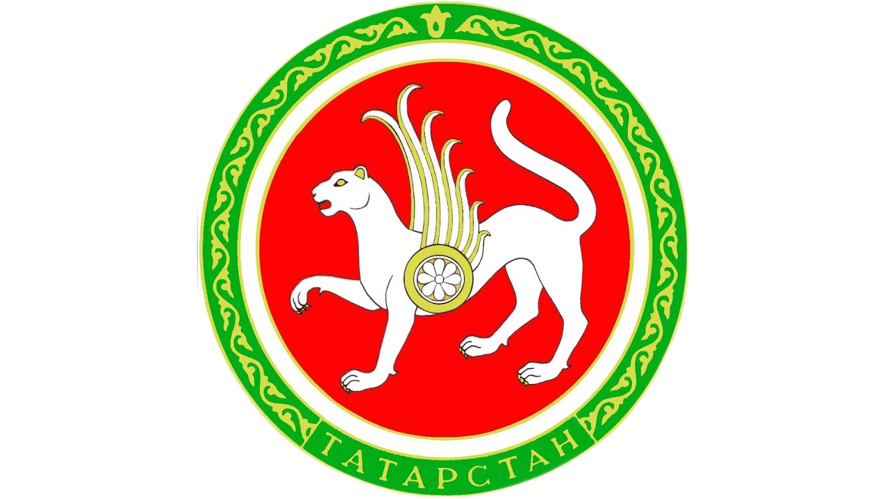

Заинский муниципальный район

20 ноября 2020 г., пятница
День открытых дверей в архивном отделе Исполнительного комитета Заинского муниципального района
Участники Дня открытых дверей воспользовались такой возможностью и некоторые даже успели подписать договор о сотрудничестве.

5 октября 2018 г., пятница
100-летию государственной архивной службы России и Республики Татарстан посвящается
Заинском муниципальном районе проведено занятие, показана выставка и проведена экскурсия для учеников 10 класса МБОУ «ЗСОШ №3».
4 октября 2018 г., четверг
К 100-летию государственной архивной службы России и Республики Татарстан
Заинском муниципальном районе организована выставка на тему: «Время, события, лица» и экскурсия для учеников 8, 9 классов МБОУ «ЗСОШ №3».
2 декабря 2022 г., пятница
Заинские школьники - призеры генеалогического конкурса «Моя родословная»
Призерами генеалогического конкурса «Моя родословная» из Заинска стали: ученик 6 класса МБОУ "ЗСОШ №2" Красильников Даниил (2 место, творческая работа "Листая страницы семейного альбома") и ученик 7 класса МБОУ "ЗСОШ №4" Ломагин Сергей (2 место, творческая работа "Энергия верности: Преемственность традиций").
28 ноября 2022 г., понедельник
В Заинске прошла научно -практическая конференция школьников «Горизонты поиска и достижений»
26 ноября на базе школы №4 прошла I республиканская научно-практическая конференция школьников «Горизонты поиска и достижений».